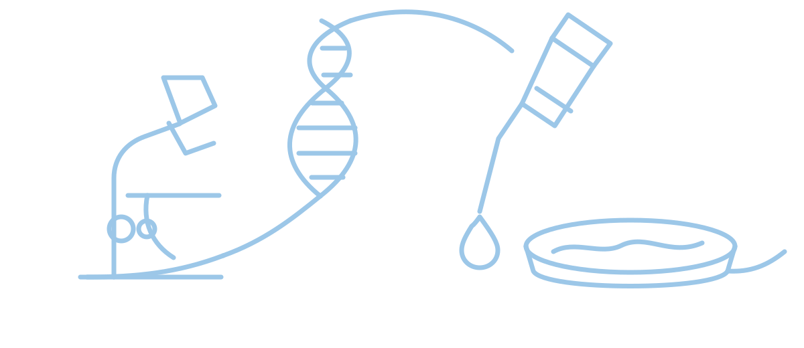
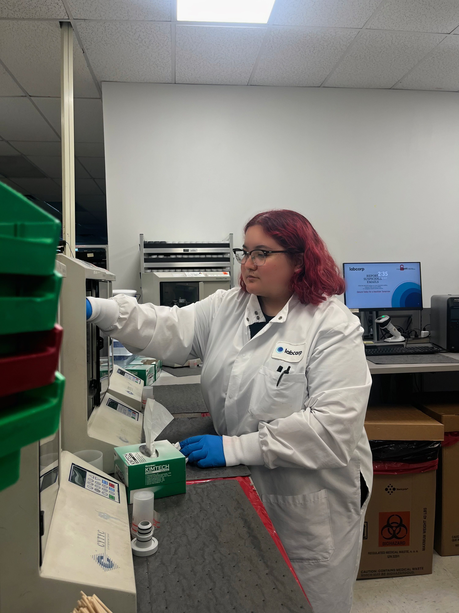

About
Behind the bench.
A biology student building a career where scientific precision supports patient care and discovery.

Melanie De Luna
Biology, pathology, and the work patients may never see.
I am pursuing a Bachelor of Science in Biology with a concentration in Cell and Molecular Biology at Texas A&M University–San Antonio, with an expected graduation date of May 2027.
My experience spans surgical pathology, high-volume clinical diagnostics, bacterial genomics, molecular biology, and microbiology research. I chose laboratory work because I believe some of the most vital contributions to healthcare happen behind the scenes. For me, every sample and data point represents a person relying on accurate science. I am driven by the discipline of the bench because it allows me to protect patient outcomes and support discovery where precision matters most. I thrive in fast-paced lab environments, balancing speed with rigorous accuracy, specimen integrity, and respect for established protocols.
Whether I am grossing a specimen, following an analyzer workflow, preparing media, reviewing morphology, or interpreting sequence data, I value accuracy, curiosity, specimen integrity, and respect for established procedures.
